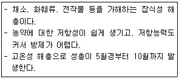
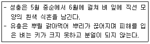

식물보호산업기사 (2019-04-27 기출문제)
1과목: 식물병리학
1. 식물이 병에 걸리기 쉬운 성질은?
- 감수성
- 저항성
- 면역성
- 병회피
(정답률: 95%)

2. 대추나무 빗자루병 치료에 가장 효과가 있는 방제 방법은?
- 외과수술
- 추비실시
- 살균제 살포
- 항생제 나무주사
(정답률: 90%)
3. 붕소의 결핍으로 사과나무에 발생하는 병은?
- 부란병
- 축과병
- 탄저병
- 점무늬낙엽병
(정답률: 78%)
4. 전염성이 없고 생물로 인한 식물병이 아닌 것은?
- 벼 도열병
- 감자탄저병
- 맥류 흰가루병
- 토마토 배꼽썩음병
(정답률: 86%)
5. 습식처리리법을 주로 사용하여 식물병을 진단하는 병원은?
- 곰팡이
- 바이러스
- 바이로이드
- 파이토플라스마
(정답률: 86%)
6. 토마토 풋마름병의 병징으로 옳은 것은?
- 무름
- 시들음
- 줄무늬
- 잎마름
(정답률: 78%)
7. 광학 현미경으로는 관찰이 거의 불가능한 병원은?
- 세균
- 선충
- 곰팡이
- 바이러스
(정답률: 90%)
8. 복숭아나무 잎오갈병의 방제를 위한 디티아논수화제 살포방법으로 가장 적합한 것은?
- 발병 초부터 10일 간격 처리
- 춘지 발생시 15일 간격으로 경엽처리
- 발아 직전 및 꽃이 피기 직전 경엽처리
- 6월 상순부터 9월 상순까지 10일 간격 처리
(정답률: 79%)
9. 사과나무 탄저병에 대한 설명으로 옳지 않은 것은?
- 가지나 잎에도 발병한다.
- 병든 과실은 쓴 맛이 난다.
- 성숙한 과실은 상처를 통해서만 감염된다.
- 과실에서는 주로 성숙기 가까이에 발병한다.
(정답률: 87%)
10. 벼 도열병 발생을 억제하는 데 가장 적합한 원소는?
- 인
- 규소
- 질소
- 칼륨
(정답률: 69%)
11. 오이 노균병에 대한 설명으로 옳은 것은?
- 세균에 의해 발생한다.
- 주로 줄기에 발생한다.
- 질소질 성분이 부족할 경우에 잘 발생한다.
- 시설재배보다 노지재배할 경우에 피해가 더 크다.
(정답률: 64%)
12. 병원균이 자낭균류에 해당하는 것은?
- 파 녹병
- 배추 무사마귀병
- 벼 잎집무늬마름병
- 복숭아나무 잎오갈병
(정답률: 51%)
13. 맥류의 흰가루병에 대한 설명으로 옳지 않은 것은?
- 자낭균에 의해 발생한다.
- 내병성 품종을 재배하여 방제한다.
- 주로 4~5월경부터 발생하기 시작한다.
- 잎에만 발생하고 잎집이나 줄기에는 발생하지 않는다.
(정답률: 83%)
14. 녹병의 표징으로 옳은 것은?
- 잎의 황화
- 뿌리에 생긴 혹
- 녹아버린 엽육 세포
- 잎 표면의 적갈색 가루
(정답률: 72%)
15. 채소에 모자이크병을 발생하는 바이러스를 옮기는 해충으로 비영속형은?
- 진딧물
- 매미충
- 애멸구
- 장님노린재
(정답률: 81%)
16. 과수 뿌리혹병의 생물적 방제에 허용되는 균은?
- Aspergillus nige
- Aspergillus nidulans
- Agrobacterium radiobacter
- Agrobacterium tumefaciens
(정답률: 78%)
17. 식물병 발병에 관여하는 3대 요인과 가장거리가 먼 것은?
- 일조부족
- 병원체의 밀도
- 중간기주의 저항성
- 기주식물의 감수성
(정답률: 66%)
18. 사과에 발생되는 병으로 주로 죽은 조직을 통해 감염되고 병든 부위의 껍질을 벗겨 보면 알콜과 같은 냄새가 나는 병은?
- 역병
- 부란병
- 겹무늬썩음병
- 검은별무늬병
(정답률: 86%)
19. 식물병을 일으키는 곰팡이로써 무성포자에 해당하는 것은?
- 분생포자
- 접합포자
- 자낭포자
- 담자포자
(정답률: 67%)
20. 종자전염을 하는 식물병은?
- 벼 도열병
- 밀 줄기녹병
- 보리 흰가루병
- 벼 흰잎마름병
(정답률: 69%)
2과목: 농림해충학
21. 다음 설명에 해당하는 해충은?

- 파밤나방
- 배추좀나방
- 이화명나방
- 애기유리나방
(정답률: 63%)
22. 기주의 범위가 가장 좁은 협식성 해충은?
- 솔나방
- 독나방
- 밤나무혹벌
- 미국흰불나방
(정답률: 61%)
23. 주로 가해하는 대상이 과수가 아닌 해충은?
- 도둑나방
- 콩가루벌레
- 가루깍지벌레
- 애모무늬잎말이나방
(정답률: 52%)
24. 땅강아지의 분류학적 위치는?
- 메뚜기목
- 노린재목
- 사마귀목
- 딱정벌레목
(정답률: 67%)
25. 2모작 맥류재배를 하면 많이 발생하는 해충은?
- 벼멸구
- 애멸구
- 흰등멸구
- 혹명나방
(정답률: 64%)
26. 입 이후의 소화기관 순서로 올바르게 나열한 것은?
- 인두-위-모이주머니-위맹낭-직장
- 인두-위맹낭-모이주머니-위-직장
- 인두-모이주머니-위-위맹낭-직장
- 인두-모이주머니-위맹낭-위-직장
(정답률: 59%)
27. 곤충의 외부 형태에 대한 설명으로 옳지 않은 것은?
- 눈은 겹눈과 홑눈이 있다.
- 가슴에는 날개, 다리가 존재한다.
- 입틀은 씹는 모양, 빠는 모양 등이 있다.
- 더듬이의 모양은 곤충 종별로 크게 다르지 않다.
(정답률: 83%)
28. 모기류 수컷의 더듬이에 존재하는 존스턴기관의 주요기능으로 옳은 것은?
- 맛을 본다.
- 냄새를 맡는다.
- 공기의 흐름을 감지한다.
- 암컷의 날개 소리를 듣는다.
(정답률: 71%)
29. 곤충의 체벽에 해당되지 않는 것은?
- 유조직
- 표피층
- 기저막
- 진피세포
(정답률: 72%)
30. 곤충의 특징으로 옳지 않은 것은?
- 생식문은 배 끝에 있다.
- 호흡기관과 허파는 배 아래쪽에 있다.
- 머리에는 입틀, 더듬이, 겹눈 등이 있다.
- 대체로 다리는 3쌍이고 5마디로 구성되어 있다.
(정답률: 77%)
31. 다음 설명에 해당하는 해충은?

- 벼멸구
- 벼잎벌레
- 벼물바구미
- 벼줄기굴파리
(정답률: 68%)
32. 기주를 이동하며 생활하는 해충은?
- 파밤나방
- 배추좀나방
- 복숭아혹진딧물
- 털두꺼비하늘소
(정답률: 61%)
33. 유충 성장 과정에서 2령층으로 옳은 것은?
- 산란 이후 부화 직전까지 유충이다.
- 1회 탈피 후 2회 탈피 전까지의 유충이다.
- 2회 탈피 후 3회 탈피 전까지의 유충이다.
- 부화 직후부터 1회 탈피 전까지의 유충이다.
(정답률: 78%)
34. 소나무좀에 대한 설명으로 옳은 것은?
- 번데기로 월동한다.
- 1년에 2~3회 발생한다.
- 성충이 나무줄기에 구멍을 뚫어 알을 낳는다.
- 5℃ 내외로 기온이 낮을 때 활동이 가장 활발하다.
(정답률: 69%)
35. 벼 재배 시 후기 해충 방제에 가장 중점을 두어야 할 대상 해충은?
- 벼멸구
- 애멸구
- 끝동매미충
- 번개매미충
(정답률: 71%)
36. 고자리파리의 기주로 가장 거리가 먼 것은?
- 파
- 마늘
- 양파
- 배추
(정답률: 73%)
37. 곤충의 생식 방법으로 옳지 않은 것은?
- 양성생식
- 다배생식
- 단위생식
- 완전생식
(정답률: 66%)
38. 식물의 선천적 내충성을 3가지로 분류할 때 포함되지 않는 것은?
- 내성
- 적응성
- 항생성
- 항객성
(정답률: 50%)
39. 해충과 천적의 연결이 옳지 않은 것은?
- 목화진딧물-무당벌레
- 온실가루-장님노린재
- 점박이응애-호리꽃등에
- 꽃노랑총채벌레-미끌애꽃노린재
(정답률: 57%)
40. 분류학상 곤충강에 속하지 않는 것은?
- 독나방
- 점박이응애
- 목화진딧물
- 가루깍지벌레
(정답률: 77%)
3과목: 농약학
41. 유기인계 살충제의 일반적인 성질에 대한 설명으로 옳은 것은?
- 인축에 대한 독성이 약하다.
- 알칼리에는 용이하게 분해된다.
- 동물의 체내에서 분해가 느리다.
- 광선에 의한 분해가 일어나지 않는다.
(정답률: 66%)
42. 농약이 갖추어야 할 일반적인 구비조건으로 틀린 것은?
- 혼용범위가 적을 것
- 물리성이 양호할 것
- 인축에 대한 독성이 낮을 것
- 농작물에 대한 약해가 적을 것
(정답률: 80%)
43. 다음 중 유기인계 살균제는?
- 에디펜포스
- 네오아소진
- 홀펫
- 라브사이드
(정답률: 50%)
44. 살균제의 주성분에 의한 분류에 해당하지 않는 것은?
- 유기수은제
- 토양소독제
- 유기주석제
- 무기황제
(정답률: 74%)
45. 다음 중 훈증제가 아닌 것은?
- 클로로피크린
- 메틸브로마이드
- 디클로르보스(DDVP)
- 인화아연
(정답률: 57%)
46. 농약의 약효발현과 가장 거리가 먼 것은?
- 방제적기에 농약 살포
- 표준희석배수의 농약 정량살포
- 효과가 좋은 농약만을 계속 사용
- 방제대상 병해충에 알맞은 농약의 선택
(정답률: 85%)
47. 석회황합제의 살균 주성분은?
- CaS
- CaS2
- CaS3
- CaS5
(정답률: 64%)
48. 농약의 급성독성에서 농약투여방법에 따른 독성구분이 아닌 것은?
- 경구독성
- 흡인독성
- 경피독성
- 보통독성
(정답률: 79%)
49. 페노뷰카브 유제(50%)를 1000배로 희석해서 10a당 8말(160L)을 살포하여 벼멸구를 방제하려 할 때 페노뷰카브 유제의 소요량은 몇 mL인가?
- 80
- 160
- 320
- 480
(정답률: 66%)
50. 퀴논계 제초제로서 접촉성 효과로 약효가 빠르게 나타나고 잔디밭에 발생하는 은이끼, 솔이끼 등에 우수한 제초제는?
- 리뉴론
- 뷰타클로로
- 티오벤카브
- 퀴노클라민
(정답률: 68%)
51. 과실의 숙기를 촉진시키는데 주로 사용되는 에틸렌계의 약제는?
- 도마도톤(4-CPA)
- 에테폰(ethephon)
- 아이비에이(IBA)
- 지베렐린(gibberellic acid)
(정답률: 76%)
52. 토양 내에 서식하고 있는 병해충을 방제하기 위한 가장 적당한 농약 사용 방법은?
- 침지법
- 살포법
- 훈증법
- 도포법
(정답률: 56%)
53. 유제(乳劑)농약이 물에 잘 섞이는가를 검사하고자 할 때 가장 중요한 성질은?
- 유화성(乳化性)
- 부착성(附着性)
- 고착성(固着性)
- 붕괴성(崩壞性)
(정답률: 85%)
54. 살균제의 작용기작 중 생합성에 대한 저해작용은?
- SH기 저해
- 전자전달저해
- 단백질 합성저해
- 산화적 인산화 저해
(정답률: 72%)
55. 작물의 특성에 따른 약해의 원인이 아닌 것은?
- 농약농도
- 작물의 감수성
- 잎 표면의 형태
- 재배조건 및 생리적 특성
(정답률: 55%)
56. 1.5% 분제 100kg을 중량제 추가 사용 없이 2% 분제로 재제조(再制造)할 때 필요한 원제(순도90%)는 약 몇 kg인가?
- 0.44kg
- 0.45kg
- 0.50kg
- 0.57kg
(정답률: 38%)
57. 배추 재배 시 달팽이를 없애기 위하여 사용하는 약제는?
- 메트알데하이드 입제
- 메토밀 액제
- 디노페푸란 입제
- 플루톨라닐 입제
(정답률: 55%)
58. 치료효과를 거두기 위해 사용되는 약제로 병이 발생한 후에도 충분한 효과를 거둘 수 있는 것은?
- 보호살균제
- 직접살균제
- 종자소독제
- 토양살균제
(정답률: 66%)
59. 농양관리법에서 규정한 토양잔류성농약의 토양 중 반감기는?
- 30일
- 90일
- 180일
- 365일
(정답률: 67%)
60. 베노밀(benomyl)에 대한 설명으로 옳은 것은?
- 살균제이다.
- 황색의 액체이다.
- 알칼리 약제와 혼용이 가능하다.
- 휘발성이 있어 침투이행성이 낮다.
(정답률: 67%)
4과목: 잡초방제학
61. 잡초의 생물적 방제 방법에 이용되는 생물의 구비 조건이 아닌 것은?
- 비산 및 분산 능력이 커야 한다.
- 번식 속도가 빠르지 않아야 한다.
- 대상 잡초에만 피해를 주어야 한다.
- 환경 적응성 및 저항성을 가지고 있어야 한다.
(정답률: 76%)
62. 제초제의 제형 중 유제에 대한 설명으로 옳은 것은?
- 물에 희석하면 투명한 액체가 된다.
- 원제를 기름과 혼합하여 만든 액체이다.
- 원제를 유기용매에 녹인 후 유화제를 넣어 만든 액체이다.
- 원제를 카올린, 벤토나이트 등의 분말과 혼합 분쇄한 것이다.
(정답률: 73%)
63. 일년생 잡초가 아닌 것은?
- 메꽃, 쑥
- 뚝새풀, 돌피
- 명아주, 깨풀
- 바랭이, 쇠비름
(정답률: 62%)
64. 화본과 잡초의 형태적 특징으로 옳지 않은 것은?
- 직립형만 존재한다.
- 잎몸은 좁고 잎맥이 평행한다.
- 줄기는 마디와 마디 사이로 연결되어 있다.
- 잎은 줄기를 둘러싸고 있는 잎집과 잎몸으로 구분된다.
(정답률: 74%)
65. 장기간에 걸친 잡초의 생존 특성으로 옳지 않은 것은?
- 많은 종자 생산
- 종자만으로 번식
- 불량한 환경 조건에 잘 적응
- 먼 거리 이동이 가능한 가벼운 종자 생산
(정답률: 80%)
66. 지하경이 가장 깊이 형성되는 것은?
- 올미
- 벗풀
- 가래
- 너도방동사니
(정답률: 46%)
67. 잡초의 밀도가 증가하면 작물의 수량이 감소하는데 어느 밀도 이상으로 잡초가 존재하면 작물의 수량이 현저히 감쇠되는 수준까지의 밀도는?
- 경제적 한계밀도
- 잡초경합 최대밀도
- 잡초경합 한계밀도
- 잡초허용 한계밀도
(정답률: 57%)
68. 논에서 가장 많이 사용되는 제초제의 제형으로 입제에 대한 설명으로 옳지 않은 것은?
- 살포가 간편하다.
- 액제보다 부피가 작다.
- 살포시 물이 필요하지 않다.
- 잎에 직접 붙지 않고 떨어지기 때문에 약해를 유발하지 않는다.
(정답률: 67%)
69. 작물과 잡초의 경합 요인으로 가장 거리가 먼 것은?
- 빛
- 수분
- 산소
- 영양분
(정답률: 77%)
70. 종자에 낚시모양의 돌기 또는 비들모양의 가시가 있어 사람이나 동물에 쉽게 부착되어 전파되는 잡초는?
- 바랭이
- 보리삥이
- 방동사니
- 도꼬마리
(정답률: 79%)
71. 잡초 종자가 휴면하는 원인으로 가장 거리가 먼 것은?
- 종피가 너무 두껍다.
- 토양 속 묻힌 깊이가 너무 낮다.
- 배가 미숙하거나 후숙되지 않았다.
- 종자 내에 발아 억제 물질이 많이 들어있다.
(정답률: 71%)
72. 방동사니과에 속하는 잡초는?
- 벗풀
- 가래
- 여뀌바늘
- 바람하늘지기
(정답률: 51%)
73. 작물과 잡초가 경합하고 있을 때 작물 수량 손실이 가장 높은 경우는?
- C4 작물과 C3 잡초
- C4 작물과 C4 잡초
- C3 작물과 C3 잡초
- C3 작물과 C4 잡초
(정답률: 76%)
74. 벼 재배 방법에 따라 발생하는 잡초의 종류 및 발생량이 가장 적은 방법은?
- 담수직파
- 건답직파
- 중묘 기계이앙
- 어린 모 기계이앙
(정답률: 68%)
75. 제초제의 광분해와 가장 관계가 높은 것은?
- 복사열
- 자외선
- 적외선
- 가시광선
(정답률: 72%)
76. 잡초의 경종적 방제 방법에 해당되지 않은 것은?
- 소각
- 윤작
- 파종기 조절
- 피복 작물 재배
(정답률: 69%)
77. 주로 밭에서 발생하는 건생 잡초만으로 올바르게 나열한 것은?
- 올미, 마디꽃
- 고마리, 진득찰
- 바랭이, 쇠비름
- 냉이, 너도방동사니
(정답률: 67%)
78. 개체당 종자 수가 가장 많은 잡초는?
- 망초
- 별꽃
- 마디꽃
- 알방동사니
(정답률: 66%)
79. 벼를 이앙한 25일 경에 논에 나가 보았더니 주로 방동사니과 잡초가 많이 발생하였을 때 방제에 가장 효과적인 제초제는?
- 벤타존 액제
- 엠시피에이 액제
- 뷰타클로르 캡슐현탁제
- 글리포세이트암모늄 입상수용제
(정답률: 58%)
80. 작물의 생육기간 중 잡초 방제를 철저히 해주어야 하는 경합한계기간은?
- 파종-발아
- 성숙기-수확기
- 개화기-성숙기
- 초관형성기-성숙기
(정답률: 67%)